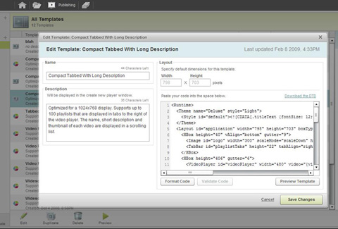
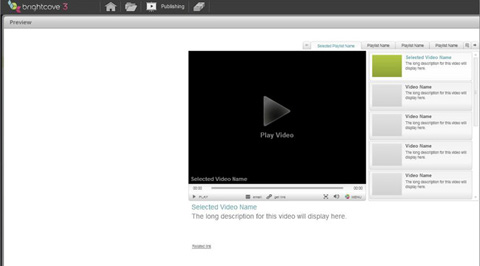
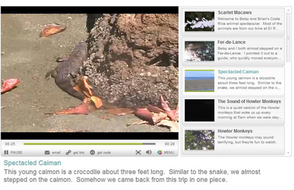

Recently I wanted to create a player to show a Caiman, Scarlet Macaw, and other animals from Costa Rica. The default players that could be used with Brightcove didn't look quite right for what I wanted to do, and so I had my first real need to use BEML for a custom player.
BEML is the XML syntax that's used to create a template that's used to create a Brightcove player. The BEML syntax will look familiar to Flex users, as there is a Canvas, VBox, HBox, Label, and many other similar components. One big difference with BEML is that it is interpreted at runtime, which means it's a bit simpler in it's language constructs, but this allows Brightcove to provide quick previews and good caching of players.
The player I wanted to create needed to display a long description below the video. None of the default templates had a really large place for text, but it looked to me like one of the existing templates could be altered for my use. So I went went into the publishing module, clicked on All Templates, and then clicked on Duplicate for the Compact Tabbed Navigation 3.0 template.
I then saw the BEML for the copied template, which I could then alter.
I first changed the height in the BEML so that the player would be taller. I didn't know exactly how much long description space I would need on the bottom, so it's probably too large, but that doesn't matter if the player is only being viewed on its own page. To change the height, I changed:
to:
I decided I would use the Long Description field for each video, which can be edited in the media module, to display the text that I wanted. So I replaced the existing reference to the Short Description in the BEML to refer to where I what I would really edit for each video. I changed:
to:
The last change I made, and the most important change, was to remove the existing XML for the template that was below the video. I only wanted the title, long description, and link in this spot. So I changed:
to:
With the BEML changes made, I could preview and see that I had the template that I wanted.
I played around with the BEML for awhile, but the whole process still took less than an hour. It was a lot more time consuming to edit the videos and come up with the descriptions. After the template was created, I created a player from the template, made all the changes in the media module for the videos, and saw the results of my work.
I had fun creating the player, which was some good eating of dog food. If you'd like to learn more about BEML, I would start at Customizing Players with BEML in the Brightcove documentation. And if you'd like to see me almost step on a poisonous snake, you can look here.
Update: check out Jeremy Allaire's post for more details on BEML.
Update2:Here's the full BEML from my example:
BEML is the XML syntax that's used to create a template that's used to create a Brightcove player. The BEML syntax will look familiar to Flex users, as there is a Canvas, VBox, HBox, Label, and many other similar components. One big difference with BEML is that it is interpreted at runtime, which means it's a bit simpler in it's language constructs, but this allows Brightcove to provide quick previews and good caching of players.
The player I wanted to create needed to display a long description below the video. None of the default templates had a really large place for text, but it looked to me like one of the existing templates could be altered for my use. So I went went into the publishing module, clicked on All Templates, and then clicked on Duplicate for the Compact Tabbed Navigation 3.0 template.
I then saw the BEML for the copied template, which I could then alter.

I first changed the height in the BEML so that the player would be taller. I didn't know exactly how much long description space I would need on the bottom, so it's probably too large, but that doesn't matter if the player is only being viewed on its own page. To change the height, I changed:
<Layout id="application" width="798" height="603" boxType="vbox"
padding="6" gutter="4">
to:
<Layout id="application" width="798" height="703" boxType="vbox"
padding="6" gutter="4">
I decided I would use the Long Description field for each video, which can be edited in the media module, to display the text that I wanted. So I replaced the existing reference to the Short Description in the BEML to refer to where I what I would really edit for each video. I changed:
<Label height="52" multiline="true"
text="{currentItem.shortDescription}"
truncate="true"/>
to:
<Label height="52" multiline="true"
text="{currentItem.longDescription}"
truncate="true"/>
The last change I made, and the most important change, was to remove the existing XML for the template that was below the video. I only wanted the title, long description, and link in this spot. So I changed:
<VBox gutter="15">
... skipping the XML in here, which includes a TitleLabel,
Link, ExpandingBanner, and much more
</VBox>
to:
<VBox>
<TitleLabel height="24" width="765" id="videoTitle"
text="{videoPlayer.video.displayName}"
selected="true" size="18" truncate="true"/>
<Label height="88" width="765" multiline="true"
id="longDesc" text="{videoPlayer.video.longDescription}"
size="18" truncate="true"/>
<Canvas>
<Link x="1" y="-5" size="10" id="relatedLink"
text="{videoPlayer.video.linkText}" vAlign="bottom"
url="{videoPlayer.video.linkURL}"/>
</Canvas>
</VBox>
With the BEML changes made, I could preview and see that I had the template that I wanted.

I played around with the BEML for awhile, but the whole process still took less than an hour. It was a lot more time consuming to edit the videos and come up with the descriptions. After the template was created, I created a player from the template, made all the changes in the media module for the videos, and saw the results of my work.

I had fun creating the player, which was some good eating of dog food. If you'd like to learn more about BEML, I would start at Customizing Players with BEML in the Brightcove documentation. And if you'd like to see me almost step on a poisonous snake, you can look here.
Update: check out Jeremy Allaire's post for more details on BEML.
Update2:Here's the full BEML from my example:
<Runtime>
<Theme name="Deluxe" style="Light">
<Style id="default"><![CDATA[.titleText {fontSize: 12;}
.bodyText {fontSize: 10;}.linkText {fontSize: 10;}]]></Style>
</Theme>
<Layout id="application" width="798" height="723" boxType="vbox"
padding="6" gutter="4">
<HBox height="40" vAlign="bottom" gutter="9">
<Image id="logo" width="300" scaleMode="scaleDown"
hAlign="left" vAlign="bottom"/>
<TabBar id="playlistTabs" height="22" tabAlign="right"
hideSingleTab="true"/>
</HBox>
<HBox height="406" gutter="6">
<VideoPlayer id="videoPlayer" width="480"
video="{videoList.selectedItem}"/>
<List id="videoList" rowHeight="78" automaticAdvance="true"
data="{playlistTabs.selectedItem.videoDTOs}"
selectOnClick="true" itemInsetV="4" itemLeading="2">
<ListItem boxType="hbox">
<Spacer width="8"/>
<VBox width="80" height="74" vAlign="middle">
<ThumbnailButton height="60" data="{currentItem}"
source="{currentItem.thumbnailURL}"/>
</VBox>
<Spacer width="7"/>
<VBox>
<Spacer height="3"/>
<TitleLabel height="18" text="{currentItem.displayName}"
truncate="true"/>
<Label height="52" multiline="true"
text="{currentItem.longDescription}"
truncate="true"/>
</VBox>
<Spacer width="3"/>
</ListItem>
</List>
</HBox>
<VBox gutter="15">
<HBox height="102">
<Spacer width="6"/>
<VBox>
<TitleLabel height="24" width="765" id="videoTitle"
text="{videoPlayer.video.displayName}" selected="true"
size="18" truncate="true"/>
<Label height="72" width="765" multiline="true"
id="longDesc"
text="{videoPlayer.video.longDescription}" size="18"
truncate="true"/>
<Canvas>
<Link x="1" y="-5" size="10" id="relatedLink"
text="{videoPlayer.video.linkText}" vAlign="bottom"
url="{videoPlayer.video.linkURL}"/>
</Canvas>
</VBox>
</HBox>
</VBox>
</Layout>
</Runtime>
Comments (3)
Great job! Do you have the BEML for this player? I am trying to do something very similar. Thanks!
Posted by Jon | February 24, 2010 4:07 PM
Posted on February 24, 2010 16:07
Hi Jon, I added the full BEML to the bottom of the post. I hope that helps!
Posted by Brian Deitte | February 25, 2010 7:28 PM
Posted on February 25, 2010 19:28
Hai,
I am new to bright-cove, my Question is,I already have a video player in Flash,i need vast support for this, so i decide to use bright-cove BEML. it is possible to add BEML dynamically to my player.
if it possible means how are start with bright-cove. i need help.i read various documents but i am not clear with this.thanks in advance. i am waiting for the replay from your's
Thank you
-Shan
Posted by Shankar | January 4, 2011 1:31 AM
Posted on January 4, 2011 01:31